A Guide to the Doctor's Major Regenerations
| Regeneration | Actor | Years | Face |
|---|---|---|---|
| First | William Hartnell | 1963 - 1966 | 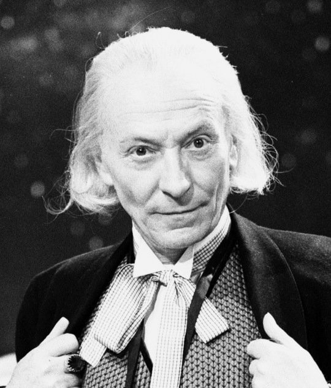 |
| Second | Patrick Troughton | 1966 - 1969 | 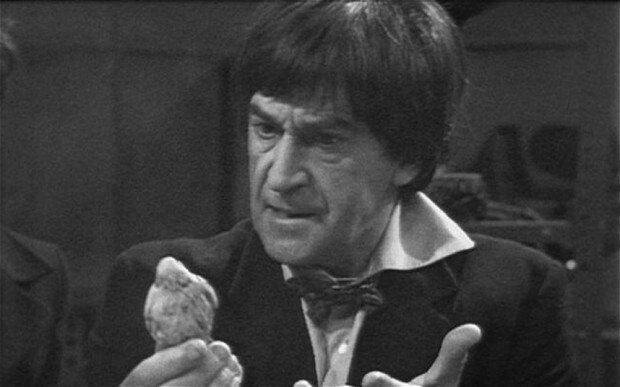 |
| Third | Jon Pertwee | 1970 - 1074 | 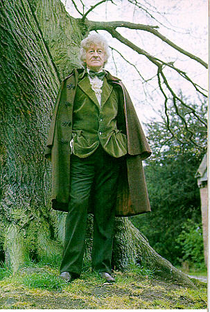 |
| Fourth | Tom Baker | 1974 - 1981 | 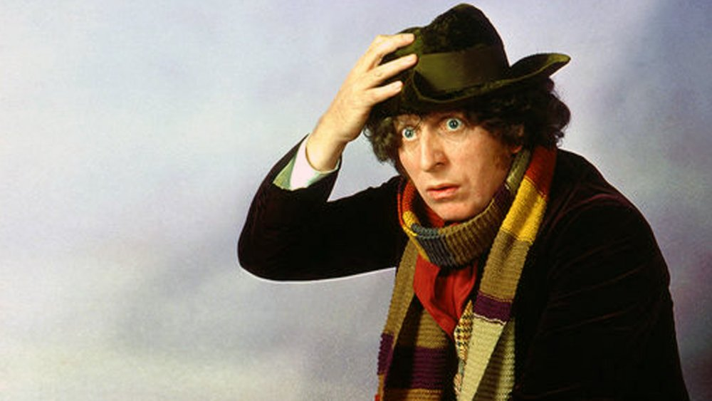 |
| Fifth | Peter Davison | 1982 - 1984 | 
|
| Sixth | Colin Baker | 1984 - 1986 | 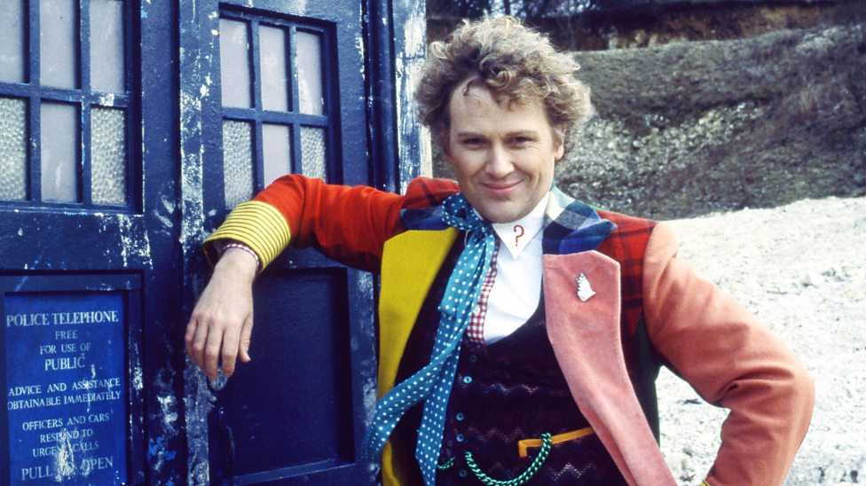 |
| Seventh | Sylvester McCoy | 1987 - 1989 | 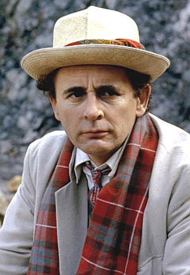 |
| Eighth | Paul McGann | 1996 | 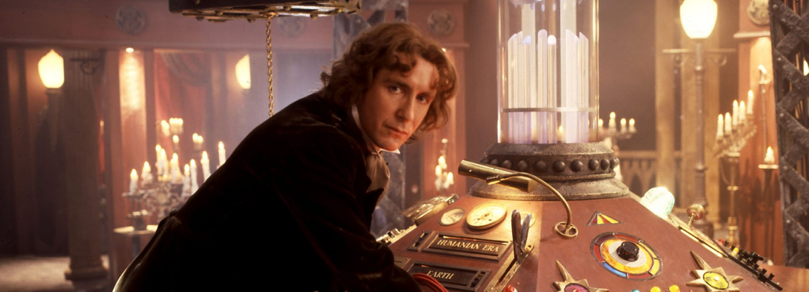 |
| Ninth | Christopher Eccleston | 2005 | 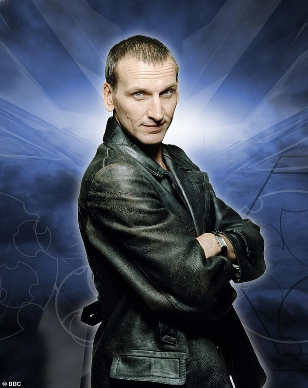 |
| Tenth | David Tennant | 2005 - 2010 | 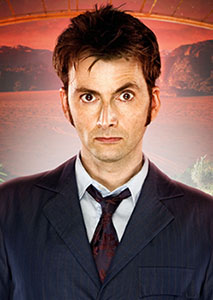 |
| Eleventh | Matt Smith | 2010 - 2013 | 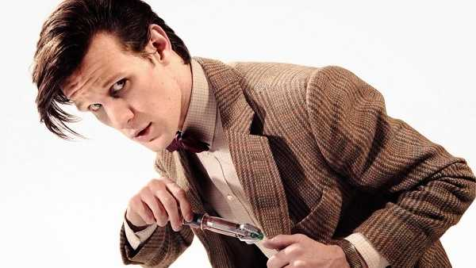 |
| War Doctor | John Hurt | 2013 | 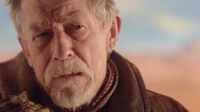 |
| Twelfth | Peter Capaldi | 2014 - 2017 | 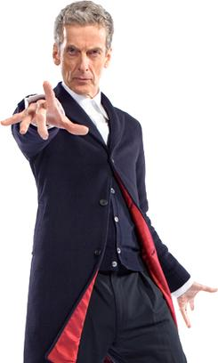 |
| Thirteenth | Jodie Whittaker | 2018 - 2022 | 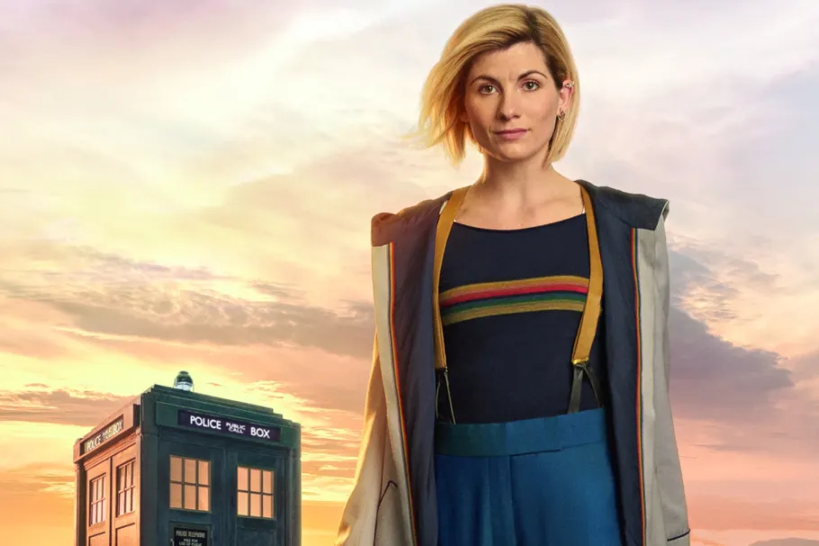 |
| Fourteenth | David Tennant | 2023 | .jpg) |
| Fifteenth | Ncuti Gatwa | 2023 - present | 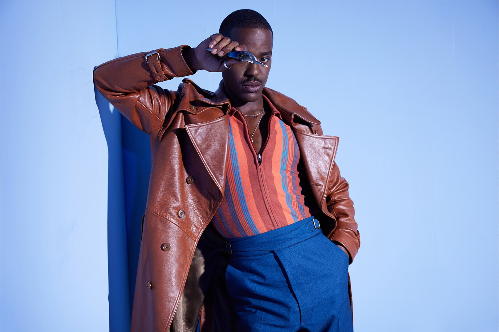 |
Notable Quotes of the Doctor
There’s no point in being grown up if you can’t be childish sometimes.
- The Fourth Doctor, Robot
You want weapons? We're in a library. Books are the best weapon in the world. This room's the greatest arsenal we could have. Arm yourself!
- The Tenth Doctor, Tooth and Claw
The way I see it, every life is a pile of good things and bad things. The good things don’t always soften the bad things, but vice versa, the bad things don’t always spoil the good things or make them unimportant.
- The Eleventh Doctor, Vincent and the Doctor